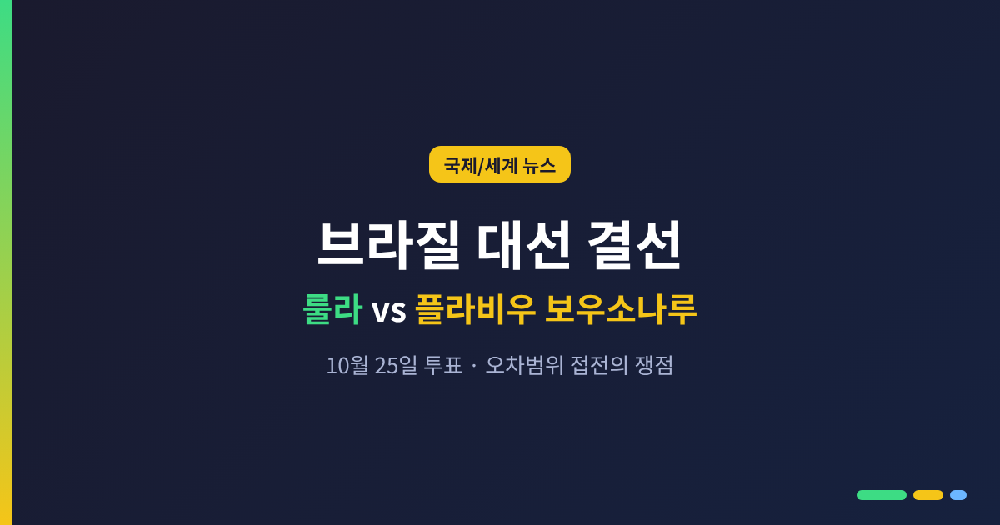
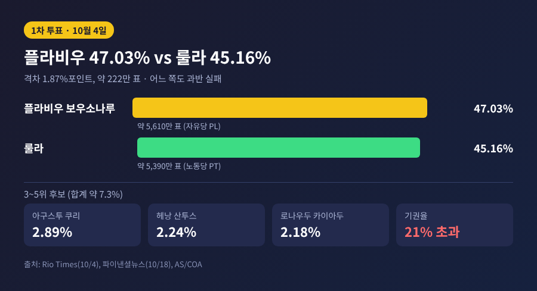
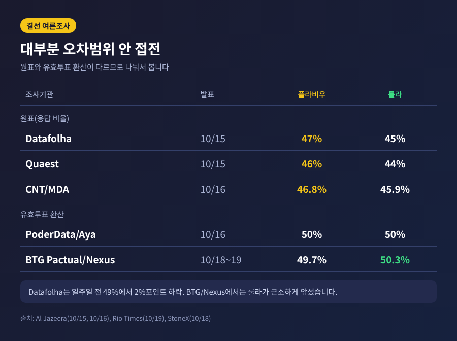
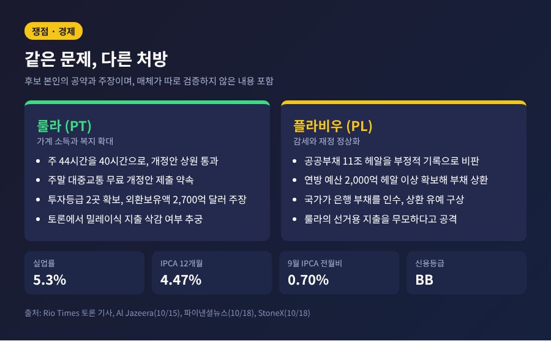
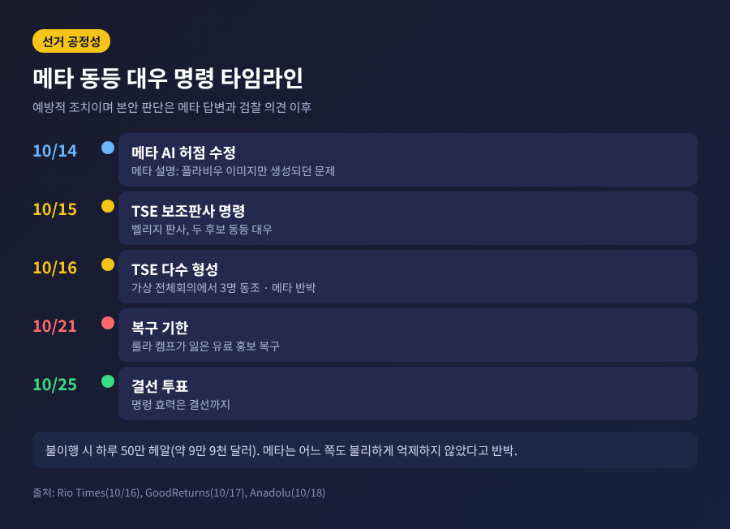
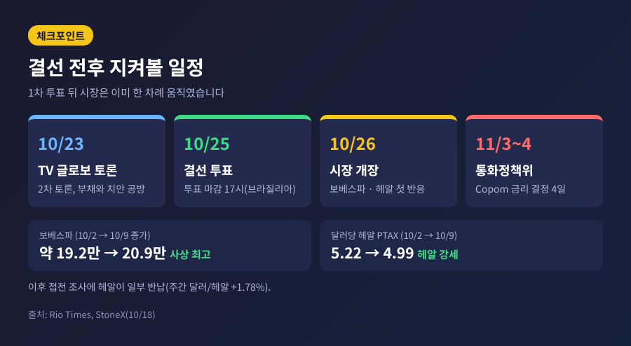

브라질 대선 결선, 룰라와 플라비우 보우소나루 오차범위 접전의 쟁점

오늘은 오는 10월 25일 치러지는 브라질 대선 결선투표를 정리해 보려 합니다.
현직 룰라 대통령과 플라비우 보우소나루 상원의원이 오차범위 안에서 맞서고 있습니다.
1차 투표 결과, 여론조사, 쟁점, 선거 공정성 논란, 한국에 주는 의미까지 차례로 살펴보겠습니다.
3줄 요약
- 1차 투표(10월 4일)는 플라비우 약 47%, 룰라 약 45%였고, 결선 여론조사는 대부분 오차범위 안의 접전입니다.
- 쟁점은 생계비와 재정, 치안, 그리고 두 가문을 둘러싼 사법 논란입니다. 법원은 메타에 두 후보를 동등하게 대우하라고 명령했습니다.
- 한국과 브라질은 2025년 교역액 110억 달러 규모이며, 한-메르코수르 FTA 논의도 새 정부의 선택에 영향을 받을 수 있습니다.
■ 무슨 일이 벌어졌나
브라질은 10월 4일 1차 투표에서 과반 득표자를 내지 못했습니다.
유효표 기준 플라비우 보우소나루(자유당)가 약 47.03%, 룰라(노동당)가 약 45.16%를 얻었습니다. 격차는 1.87%포인트, 표로는 약 222만 표입니다. (출처: 파이낸셜뉴스 10월 18일, Rio Times)
두 후보는 10월 25일 일요일 결선에서 맞붙습니다.
룰라는 80세로 4선에 도전합니다. 플라비우는 45세로, 쿠데타 모의 혐의로 징역 27년형을 받고 가택연금 중인 자이르 보우소나루 전 대통령의 아들입니다. (출처: Al Jazeera 10월 19일)
룰라가 1차 투표에서 1위를 내준 것은 1998년 이후 처음이라고 미국의 중남미 전문 기구 AS/COA(아메리카스 소사이어티/미주협의회)는 짚었습니다.
다만 1989년 민주화 이후 1차 1위가 결선에서 진 사례는 없다는 점도 함께 기억할 만합니다.

■ 여론조사는 접전, 흐름은 룰라 쪽으로
결선 직전 조사는 거의 모두 오차범위 안입니다.
Datafolha는 10월 15일 플라비우 47%, 룰라 45%를 발표했습니다. 일주일 전 49%였던 플라비우는 2%포인트 내려갔습니다. Quaest는 플라비우 46%, 룰라 44%, CNT/MDA는 46.8% 대 45.9%였습니다. (출처: Al Jazeera 10월 15일·16일)
유효투표로 환산하면 더 팽팽합니다.
PoderData/Aya는 50 대 50, BTG Pactual/Nexus는 10월 18~19일 조사에서 룰라 50.3%, 플라비우 49.7%로 룰라가 근소하게 앞섰다고 Rio Times는 전했습니다.
10월 초 AtlasIntel이 플라비우 52.8%를 기록했던 것과 비교하면 분위기가 달라졌습니다.
그러나 변수가 남아 있습니다.
1차 투표에서 밀려난 후보들의 지지층 중 4분의 1 이상이 결선에서 무효표나 기권을 고려한다고 합니다. 기권율은 1차에서 21%를 넘어 1998년 이후 최고였습니다. 룰라가 이기려면 탈락 후보 표 10장 가운데 6장가량을 가져와야 한다는 분석이 있습니다. (출처: AS/COA)
예측시장은 다른 그림을 보여줍니다.
10월 19일 새벽 기준 Polymarket과 Kalshi는 플라비우의 승리 가능성을 약 79~80%로 매겼습니다. 여론조사의 접전과 간격이 있어, 참고 수치 정도로만 보시길 권합니다.

■ 쟁점 1: 생계비와 재정
두 후보 모두 경제를 전면에 내세웁니다. 처방은 다릅니다.
룰라는 가계 소득과 복지를 앞세웁니다.
상원이 주 44시간 근무를 40시간으로 줄이는 헌법 개정안을 임금 삭감 없이 통과시켰고, 룰라는 이를 핵심 성과로 꼽습니다. 주말 대중교통 무료화 개정안 제출도 약속했습니다. 토론에서는 투자등급 신용평가 2곳을 확보했고 외환보유액이 2,700억 달러에 이른다고 주장했습니다.
플라비우는 감세와 작은 정부를 말합니다.
공공부채 11조 헤알을 "부정적 기록"이라 비판하고, 연방 예산에서 2,000억 헤알 이상을 확보해 부채 상환에 쓰겠다고 했습니다. 서민 부채는 국가가 은행에서 사들여 상환을 유예하는 구상도 내놓았습니다. 룰라의 선거용 지출은 "무모하다"고 공격합니다. (출처: Rio Times 토론 기사) 이 발언들은 후보 본인의 주장이며, 보도 매체가 따로 검증한 것은 아닙니다.
숫자는 이렇습니다.
실업률은 5.3%로 사상 최저 수준이지만, 고물가와 가계부채가 체감 경기를 누른다는 평가입니다. 9월 소비자물가(IPCA)는 전월 대비 0.70%로 예상치 0.53%를 웃돌았고, 12개월 상승률은 4.47%입니다. (출처: StoneX 10월 18일) 신용등급은 투자적격 아래 단계(BB)입니다.
정부 부채 비율은 소스에 따라 GDP의 82% 이상, 또는 93%로 엇갈립니다. 산정 기준의 차이일 수 있어 어느 한쪽으로 단정하지 않겠습니다.

■ 쟁점 2: 치안과 양극화
토론은 공공안전 주제로 시작했습니다.
플라비우는 범죄와 마약 조직에 대한 강경 대응을 내세웁니다. 룰라 쪽은 조직범죄 대응 계획으로 맞섰습니다. 플라비우가 이기면 브라질이 미국 주도의 안보 협력체에 참여할 수 있다는 관측도 있습니다. (출처: AS/COA)
지지 기반은 분명하게 갈립니다.
룰라는 북동부, 저소득층, 가톨릭 신자에게서 강합니다. 플라비우는 남동부 대도시, 중산층, 복음주의 신자에게서 앞섭니다. 1차 투표에서 플라비우는 2022년 룰라가 이겼던 716개 시·군을 가져갔고, 룰라는 27개 주 중 25곳에서 2022년보다 득표가 줄었습니다.
10월 18일 상파울루 Band TV 토론은 거칠었습니다.
룰라는 플라비우를 "상습적 거짓말쟁이"라 부르며 리우 지역 민병대와의 연관을 암시했습니다. 플라비우는 룰라를 "광대"라 부르고 아들 관련 부패 의혹을 꺼냈습니다. 코로나19 대응이 거론되자 플라비우는 아버지 정부가 "최상의 결과를 본 분야는 아니었다"고 인정했습니다. (출처: Al Jazeera 10월 19일)
양쪽 모두 사법 리스크를 안고 있습니다.
연방경찰은 측근 변호사 관련 자금세탁 의혹과 관련해 플라비우 수사를 대법원에 요청했고, 전직 은행가 다니엘 보르카루 관련 조사도 이어지고 있습니다. 룰라 정부 쪽에는 방코 마스테르 사건과 연금 사기 의혹이 공방의 소재가 됐습니다.
■ 선거 공정성: 메타 동등 대우 명령
이번 결선에서 가장 눈에 띄는 쟁점은 소셜미디어입니다.
연방선거법원(TSE)의 마르쿠 아우렐리우 벨리지 판사는 10월 15일, 룰라 연합의 제소를 받아 메타에 두 후보를 동등하게 대우하라는 명령을 내렸습니다. 10월 16일에는 가상 전체회의에서 다른 판사 3명이 동조해 다수가 형성됐습니다. (출처: Rio Times 10월 16일)
명령의 골자는 이렇습니다.
- 공개된 동일 규칙이나 법원 명령에 따른 경우가 아니면 어느 후보의 도달 범위, 추천, 검색 결과, 지표도 줄일 수 없습니다.
- 광고 계정 차단이나 게시물 부스팅 차단은 사람의 검토 없이 못 하며, 자동 제한은 2시간 안에 검토해야 합니다.
- 룰라 캠프가 잃은 유료 홍보를 10월 21일까지 복구해야 합니다.
- 메타 AI도 두 후보에 같은 규칙을 적용해야 하고, 어기면 하루 50만 헤알(약 9만 9천 달러)의 과태료가 붙습니다.
메타는 어느 쪽도 불리하게 만들지 않았다고 반박합니다.
메타 AI의 안전장치 허점 때문에 플라비우 관련 이미지는 만들어지고 룰라 관련 요청은 거부된 사실은 인정하며 10월 14일 고쳤다고 밝혔습니다. 릴스 조회수 동결과 광고 도구 오류도 기술적 결함이라는 설명입니다. 폴랴 지 상파울루는 유출된 내부 메시지에서 직원들이 룰라 계정 제한을 인정했고, 그중 일부는 시스템 오류와 연결됐다고 보도했습니다. (출처: Anadolu, GoodReturns)
법원도 선을 그었습니다.
벨리지 판사는 이번 결정이 메타의 콘텐츠 조작을 인정한 것은 아니며 예방적 조치라고 밝혔습니다. 본안 판단은 메타의 답변과 선거 검찰의 의견이 나온 뒤에 이뤄집니다. 의도적 편향인지, 시스템 오류인지는 아직 확정된 바가 없다는 뜻입니다. 항소 여부는 확인되지 않았습니다.

■ 한국과 세계경제에 주는 의미
한국과 브라질의 관계는 올해 한층 가까워졌습니다.
2025년 양국 교역액은 110억 달러입니다. 2월 룰라가 방한해 관계가 전략적 동반자로 격상됐고, 7월 27일에는 이재명 대통령이 브라질리아를 국빈 방문해 한-메르코수르 FTA를 더는 미루지 말자는 데 뜻을 모았습니다. 리튬 등 핵심광물, 방산, 항공우주, 디지털 분야 협력도 합의됐습니다. (출처: The Korea Times 7월 28일)
그래서 결선의 향방은 한국에도 무관하지 않습니다.
다만 두 후보가 한국을 겨냥해 어떤 공약을 냈는지는 확인되지 않았습니다. 누가 당선되든 이 협력 틀이 어떻게 이어질지는 새 정부의 통상 기조에 달려 있다고 보는 편이 정확합니다.
세계 시장은 이미 반응했습니다.
1차 투표 뒤 보베스파 지수는 10월 2일 약 19만 2천 포인트에서 9일 사상 최고 종가 20만 9천 포인트로 올랐고, 달러당 헤알 환율 기준값(PTAX)은 5.22에서 4.99로 내렸습니다. 이후 접전 조사가 나오자 헤알은 일부 반납했습니다. (출처: Rio Times, StoneX) 분석가들은 플라비우가 이기면 금리 선물 하락과 주가 강세, 룰라가 이기면 반대 압력을 예상합니다. 어느 쪽이든 재정 계획이 구체적이지 않다는 점이 공통의 숙제로 지적됩니다.

■ 전망: 무엇을 지켜봐야 하나
핵심은 세 가지입니다.
첫째, 투표 참여입니다.
탈락 후보 표 중 상당수가 무효나 기권으로 빠질 수 있습니다. 1차처럼 기권율이 20%를 넘는다면, 접전의 승패가 이 표에서 갈릴 수 있습니다.
둘째, 10월 23일 TV 글로보 토론입니다.
첫 토론이 거친 공방으로 끝난 만큼, 부채와 치안에서 설득력을 얻는 쪽이 부동층에 다가갈 수 있습니다.
셋째, 의회 구도입니다.
자유당은 상원 의석을 9석에서 28석으로 늘렸고 하원에서도 121석을 얻었습니다. 상원은 대법관 탄핵을 의결할 수 있고 중앙은행 이사 인준권도 쥐고 있습니다. 룰라가 재선되더라도 의회와의 관계는 쉽지 않으리라는 평가가 나옵니다. 상원이 대법관 탄핵을 요구해 온 우파 쪽으로 기운 만큼, 누가 당선되든 대법원과 의회의 관계가 변수로 남습니다. 대법관 탄핵 가결에 필요한 의석에는 우호 의원이 5명 모자란다고 AS/COA는 계산했습니다.
정리하면 이렇습니다.
이번 결선은 경제 성적표, 치안, 가문의 사법 논란, 플랫폼의 공정성이 한꺼번에 얽힌 선거입니다.
어느 쪽이 이기든 10월 26일 시장은 곧바로 답을 내놓을 것입니다. 다만 그 답이 얼마나 오래 갈지는, 당선자가 내놓을 재정 계획과 반으로 갈린 나라를 어떻게 이을지에 달려 있습니다.
접전의 끝에서 남는 질문은 결국 하나입니다 — 결과를 받아들이는 사회인가.
※ 이 글은 2026년 10월 19일까지 보도된 내용에 근거하며, 이후 조사와 결과는 달라질 수 있습니다.